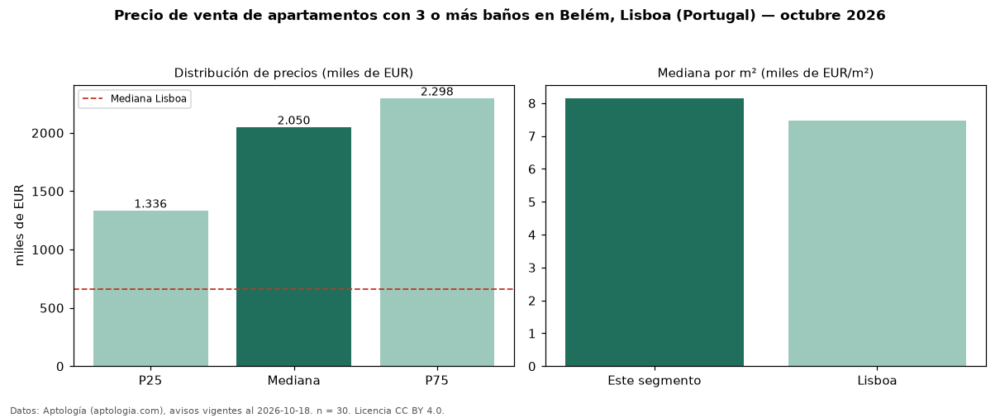

Precio de venta de apartamentos con 3 o más baños en Belém, Lisboa (Portugal) — octubre 2026
EUR 2,05 millones es el precio mediano de apartamentos con 3 o más baños en venta en Belém, Lisboa (Portugal) (n = 30 avisos). Eso es 37 % más que la mediana de todos los apartamentos en venta de Belém (EUR 1,50 millones, n = 41); este segmento reúne el 73 % de esos avisos. Por metro cuadrado, la mediana es EUR 8.153/m² (n = 30), 1 % por encima del conjunto de referencia (EUR 8.101/m²). El área mediana anunciada es 254 m². El segmento con más oferta es el de 3 o más habitaciones (30 avisos, mediana EUR 2,05 millones). La mitad central de los avisos va de EUR 1,34 millones a EUR 2,30 millones (razón 1,7), una dispersión moderada. La mediana de todos los apartamentos en venta de Lisboa es EUR 660.000 (+211 % de diferencia). Datos: Aptología (aptologia.com), CC BY 4.0 — https://www.aptologia.com/pt/venda/lisboa. Archivos: PDF, CSV con las cifras y gráfica PNG.

| Avisos únicos | 30 |
|---|---|
| Percentil 25 | COP 1.335.500 |
| Mediana | COP 2.050.000 |
| Percentil 75 | COP 2.297.500 |
| Mediana por m² | COP 8.152 |
Fuente: avisos vigentes de portales inmobiliarios recopilados por Aptología, deduplicados (mínimo 30 avisos únicos por celda). Precios pedidos, no cerrados. Fecha: 2026-10-18.